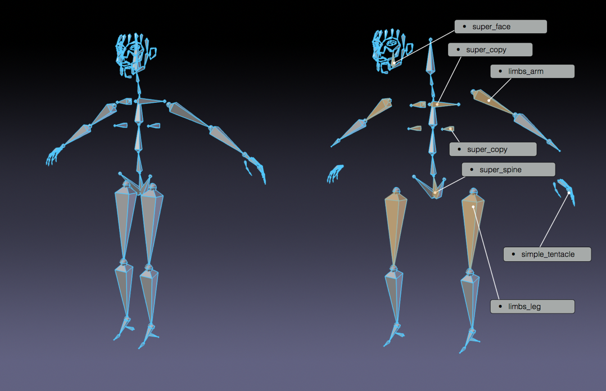
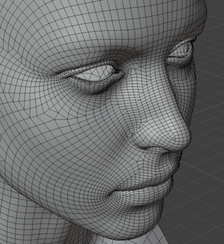
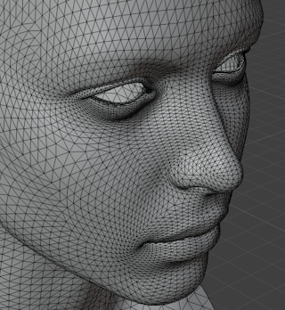
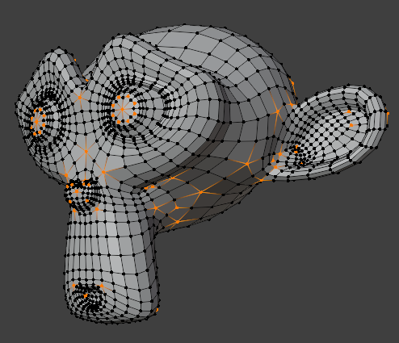

Choose a proportion
A believable stylized human is roughly 7–7.5 head-heights tall. Cartoonier styles compress toward 4–5.
Character Art · 60–75 minutes · Grades 8–12
Organic modeling has one non-negotiable rule: keep the mesh in clean four-sided faces, especially around joints. This lesson box-models a simple stylized character with topology that will actually deform well later.
Finish line: a simple, symmetric, all-quad character mesh, smoothed with a Subdivision Surface modifier.
Model the right half only, mirrored across X — exactly like the chair in Lesson 03.
Reference
Proportions before polygons
A believable stylized human is roughly 7–7.5 head-heights tall. Cartoonier styles compress toward 4–5.
Add → Image → Reference in Front orthographic view (Numpad 1) to trace over a front-view sketch or photo.
Your goal is a low-poly, game-ready base — not a photoreal sculpt. Big, readable shapes beat fine detail.

Block out
Extrude the skeleton of the shape
Scale it into the torso's rough proportions in Front view, on the +X half of the character only.
In Edit Mode, select the shoulder-side face and press E repeatedly to extend an arm outward in short, jointed segments.
Select the base of the torso and extrude downward the same way, through hip, knee, and ankle.
Press Ctrl+R near each elbow, knee, and shoulder to add the extra edge loop that lets it bend cleanly later.
Topology
The rule that protects everything later
Topology is how a mesh's edges flow across its surface. Good topology is invisible when a character stands still and essential the moment it moves.
The goal
A four-sided face. Quads deform predictably under a Subdivision Surface modifier and later under bone weights.
Use sparingly
Fine on flat, rigid areas that never bend — never place one at a joint like an elbow or knee.
Avoid at joints
A vertex with 3 or 5+ edges connected to it. Unavoidable in a few places, but a pole sitting on a knee or elbow will pinch when it bends.



Enable Viewport Overlays → Statistics, or switch face select and look for anything that isn't a clean four-sided face. In Edit Mode, Select → Select All by Trait → Faces by Sides can find stray triangles and n-gons for you.
Smooth
From blocky to stylized
Subdivision Surface smooths the low-poly cage into a rounded final shape while you keep editing the simple version underneath. It is non-destructive — turn it off any time to see and edit the base mesh.
Modifier Properties → Add Modifier → Subdivision Surface. Start at 2 viewport levels.
Select an edge loop (like the edge of a stylized shoe or a collar) and set Edge Crease in the N-panel to keep it sharp through subdivision.
Right-click → Shade Smooth so the surface reads as one continuous form instead of faceted low-poly panels.
Build
Hands on
Extrude from a single torso cube on the +X half, following your reference image.
Extrude or add a separate sphere for the head, scaled to your chosen head-height proportion.
Shoulder, elbow, wrist, hip, knee, ankle — each needs at least one extra edge loop.
Fix the origin to the centerline, then add a Mirror modifier.
Smooth the form, crease any edges that should stay sharp, then Shade Smooth.
Check for stray triangles or poles at joints, rename the object, and press Ctrl+S.
Check
Exit ticket
Definition of done
The Character Rigging and Character Animation lessons in the Game Asset Studio pathway pick up exactly where this one ends.